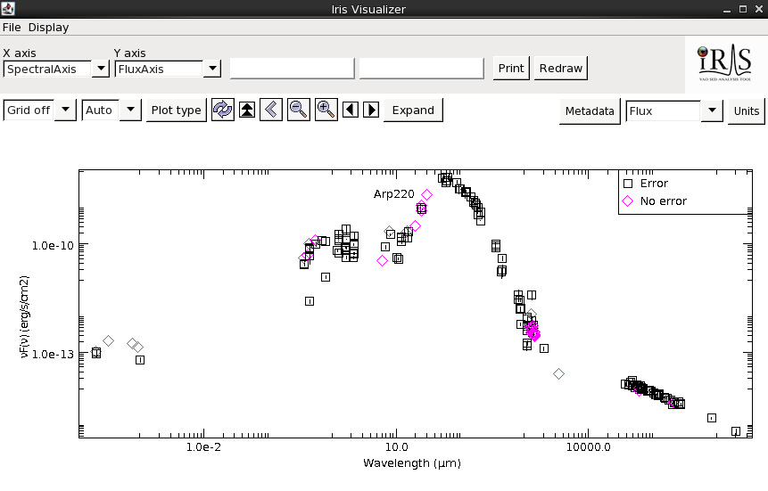

Since version 1.2, Iris has added several science capabilities built upon the powerful SED building and modeling already implemented in the previous versions of the tool, making Iris even more useful for astronomers. In this thread, we discuss how you can interpolate and smooth SEDs, shift SEDs to any cosmological redshift, and calculate the flux through a given interval or a photometric filter.
New to Iris 2.1, users can now integrate under fitted model components as well as directly under the SED data.
Related Links:
Last Update: 07 May 2015 - Updated for Iris 2.1 beta. New feature: intergration under fitted model components.
For this thread, we use the SED of Arp 220, which is the closest ultra-luminous infrared galaxy (redshift z=0.018). The photometric data is imported from the NED SED service via the Load NED SED desktop icon. The more useful visualization of the SED of this source can be obtained in the Viewer window switching from flux density to flux in the “Units” field (here we use erg/s/cm^2^ against microns). In this visualization, we can clearly see that the infrared radiation dominates the SED.

Now that we have our SED loaded, we can explore the Science applications in IRIS. In the main IRIS window, click on the “Shift, Interpolate, Integrate” icon to open the Science window. The left column shows the list of SEDs available, while on the right the first tab, named “Redshift and Interpolation”, allows users to move the SED of a source in redshift (upper panel), or produce new SEDs by interpolating the SED selected in the list on the left, using different techniques (lower panel). The second tab, called “Calculate Flux”, allows users to evaluate integrated photometric quantities.
After checking that Arp 220 SED is selected in the left, we can choose the method for the interpolation, the interval limits, and the units of the final interpolated SEDs. In this case, the default values of the parameters (“Linear Spline” as the interpolation method, “Angstrom” as Units, and 1000 as the number of bins in the final interpolated SED) are good. In order to produce a smoothed version of the interpolated SED that would minimize the effect of any small scale scatter, we can also tick the “Smooth” box and choose the size of the box (expressed as a number of data points). Then, clicking on “Create New SED” will create the smoothed and interpolated version of the Arp 220 SED. The new interpolated SED will appear in the “open SED” frame in the “Science” “SED Builder” windows, and will automatically be displayed in the Iris Visualizer. Just for the sake of comparison, we overplot the original data over the interpolated SED using the “co-plot” function located under “Display” in the Iris Visualizer tool bar.
| [Back to top] |
Iris is capable of shifting SEDs to and from any cosmological redshift under the “Redshift and Interpolation” tab in the “Science” window. Simply input the initial redshift of the SED in the field labeled “Initial redshift”, input the new redshift into the “Move to redshift” field, and click “Create New SED”. A new SED will appear in the list of SEDs on the “Open SEDs” box of the “Science” and SED Builder windows, containing the redshifted photometric points. The newly created SED will automatically appear on the Iris Visualizer.
Let’s say that now we would like to understand how the SED of Arp 220 would look if it was located at a much higher redshift than the actual redshift (z=0.018), for example at z=0.5. We will enter 0.018 in the “Initial redshift” field and 0.5 in the “Move to redshift” field. The resulting change in the shape of the SED can be inspected qualitatively by coplotting the original SED and the redshifted SED at z=0.5 using the co-plot function (in Iris Visualizer tool bar, under “Display”. See more about co-plotting in Visualizing SED Data in Iris).
We might also be interested in how the SED of this source would look like if it was in the vicinity of the Milky Way, say at redshift z=0. We can reconstruct the “local” version of the Arp 220 SED just setting to 0 the “Move to redshift” field and clicking again on “Create new SED”. For Arp 220, there isn’t much of a difference between the z=0 SED and the original SED. However, this method is useful for shifting high-redshift sources to rest frame.
*Note: Any metadata associated with the original SED will be lost. This means if you shift a multi-segment SED, the result will be a one-segment SED; Only information from the Data tab in the Metadata Browser will remain.*
*Note: setting either one of the initial or final redshift values to a negative number will trigger an “Invalid redshift values” error message, since IRIS only takes into account the effect of the cosmological redshift.*
| [Back to top] |
Another useful science capability is the ability to evaluate integrated fluxes from SEDs in spectral intervals that can be either defined by the users or selected from a repository of existing photometric systems. Fluxes can be calculated from the SEDs themselves or from a fitted model.
To calculate a meaningful flux, there must be enough photometric points in the spectral range we wish to integrate over. Therefore, it is a safe-bet to use either an interpolated SED or a fitted model when calculating the flux, provided that the number of bins is large enough to densely sample the SED. We can calculate the flux directly from the original SED, but by using the interpolated SED or a fitted model, we don’t have to worry about having enough data points in the spectral range we are integrating over.
We showcase the highlights of this capability using again Arp 220. The first two sections describe what passbands you can add and how, while the third section describes how you can use a fitted model to calculate integrated fluxes.
In the “Science” window, select the “Calculate Flux” tab. Under the section “Add Passband”, users can add a simple user-defined passband or any pre-loaded photometry filter. This section describes the “Passband”.
Iris can integrate the flux of an SED in a user-defined passband. The interval of integration can be over wavelength (in Angstroms), frequency (in Hz), or in energy (keV). The user selects the “Passband” option, enters the lower and upper limits in the empty fields adjacent to the “Passband” option, and selects the desired units in the drop-down menu on the right. By clicking on “Add”, the passband, effective wavelength (in Angstroms) and the integrated flux (in erg/s/cm2) will automatically be added to the list in the “Results” table in the bottom of the window. Note that these values can be converted into any other units supported by Iris (i.e. the units listed in the Iris Visualizer “Units” browser).
Let’s calculate some fluxes for our smoothed and interpolated Arp220 SED. Since Arp220 is a infrared luminous source, let’s calculate the observed infrared flux on the interval [0.8, 1000] microns (or [8000, 1e7] Angstroms). Select “Passband” and enter the lower (1e4) and upper (1e7) limits in the blank fields, like in the figure below. In the drop-down menu on the right, select “Angstroms” as the unit of measure. Leave “Integrate Model” unselected. Now, by clicking on “Add”, the passband we have defined will be automatically added to the “Results” list (in this case, it will be the first), together with the calculated flux value and the effective wavelength measured in Angstrom. We can repeat the operation with any different spectral interval in any units, for example [1e9, 1e10] Hz, and the resulting integrated flux will appear in the “Results” panel after clicking on “Add”.
| [Back to top] |
The Photometry Filter Selector allows the user to easily calculate the flux of an object as it would be measured by a real photometric system used at a given observatory. It contains over 2100 photometric transmission curves provided by the Spanish Virtual Observatory, which span the full electromagnetic spectrum. You can open the Photometry Filter Selector from the “Calculate Flux” tab by selecting “Photometry filter” and clicking “Choose”. You can also open this window from the Iris desktop toolbar, under Tools -> SED Builder -> Photometry Filter Browser.
In the browser, the catalog of facilities/observatories is on the left, and filter information appears on the right (see figure below). The facilities and corresponding filters are arranged in alphabetical order. Clicking on any of the arrows on the left of each name will toggle down the available filters for that observatory. When you select a filter, the fields on the right side of the window will fill up with basic information about the filter. There is a search “By String” bar in the top-right corner of the window, into which a facility or instrument name is typed to fetch a list of available filters. The user is allowed to select multiple filters at a time by holding down the Shift or Ctrl (“Command” on Mac) keys and clicking on the filter name. When all filters are selected, clicking the “Done” button at the bottom of the window will automatically close the Photometry Filter Selector, and calculate and display the integrated fluxes in the “Results” section in the “Science” window. Other previously calculated fluxes will remain in the list. Below is an example of the photometry browser, after selecting the WISE filters (which we will do in the example below).
For example, let’s say that we want to evaluate what integrated fluxes from Arp 220 we would expect to observe in the four WISE bands (3.4, 4.6, 12 and 22 microns) from the WISE telescope. We open the Photometry Filter Selector by selecting the “Photometry filter” option in the “Calculate flux” tab of the “Science” window and clicking on “Choose”. Now, we browse the list for the WISE filters, then click on the arrow next to the WISE folder to reveal the available filters. We select all four WISE filters by holding down the Shift key and clicking the top and bottom filters. We see the basic filter information appear in the fields on the right. Click “Done” to calculate the integrated fluxes. Now we see the flux from the WISE filters (see figure below), as well as the fluxes from our user-defined passbands. All the flux values can be saved to a ASCII file by clicking on “Save” (see next section), and can be extracted as a separate SED by clicking “Create SED” on the bottom of the window.
| [Back to top] |
After fitting a SED, you can choose to integrate under the fitted model components. The user may integrate under the full model or an arbitrary combination of the model components. Both passbands and photometry filters are allowed.
Above is an example of the default integration under a model, given that the model is a linear combination of two components. The Model Integration button is checked. (YES) means it’s on, (NO) means it’s off.
The value in the “Model evaluation bin #” box determines how many spectral bins will be used to calculate the integral.
By checking-off “Full model,” the user can arbitrarily combine the model components, then integrate the expression in the “Model Expression” field. This means that users can integrate under individual model components. Multiplication and addition of other model components and numeric values are acceptable. For example, the expressions "c2 * 3.678", "c2 * c1", and "c1 + c2 * 1.2" are allowed.
Say we fit our original Arp220 SED with a broken powerlaw for the near IR and a blackbody for the IR dust bump using Nelder-Mead optimization and chi-squared statistics. Going back to the “Calculate Flux” in the Science tool, we add the WISE photometry filters and add a user-defined pass band from 0.8 to 1000 microns (8000 - 1E7 Angstroms). To integrate under the fitted model, we turn “Integrate Model” on (YES), and click “Calculate.”
Users may view the fitted model component details by clicking on “Show model”. This convenience button let’s you see the model components and their parameter values when all the Fitting Tool windows are minimized. For our example, we see the parameter values for the blackbody and broken powerlaw.
Now say we want to see what the flux under our passbands are for only the blackbody. We uncheck “Full Model,” type "c1" into the Model Expression field, and click “Calculate”:
NOTE: If the user exits the main Fitting Tool window, the user will no longer be able to integrate under the fitted model, as the models will be lost from closing the fitting session. Iris will ask the user if they really want to leave the fitting session if they try to close the Fitting Tool.
| [Back to top] |
You can save the calculated fluxes into an ASCII file for external use by clicking the “Save” button on the bottom of the “Calculate Flux” tab. You have the option to save any or all of the calculated fluxes in ASCII format by highlighting the ones you wish to save; clicking “Save” without highlighting any of the Results will save all fluxes. A simple interface allow users to pick the location, name of the file, and the units for the effective wavelengths of the spectral intervals/photometric systems and fluxes, respectively, using the X and Y drop-down menus. The following is the file output from our interpolated Arp 220 SED, with the effective wavelength in microns and the flux in erg/s/cm^2^.
# This file was generated by Iris, the VAO SED building and analysis tool
#
# Iris Flux Integration output
# Spectral values are the effective wavelengths of the passbands
#
# File created on Wed Feb 25 16:05:58 EST 2015
#
#
# TARGET = ARP 220
# RA = 233.737985
# DEC = 23.503187
# XUNIT = um
# YUNIT = erg/s/cm2
#
# x y
3.315655859375 1.15034615781E-15
4.56449921875 6.69067475881E-16
10.78684453125 1.22262438471E-15
21.9149640625 2.88628452028E-15
4000.5 8.44103142055E-9
164885.875 2.02285348225E-14
These files can be re-loaded into Iris as an ASCII Table.
| Date | Change |
|---|---|
| 02 Jun 2013 | First issue |
| 05 Aug 2013 | Updated to illustrate shifting, interpolation and integration features only. Previous version moved to “Iris 2.0 Features Tour”. |
| 02 Dec 2013 | Updated for Iris 2.0.1 |
| 07 May 2015 | Updated for Iris 2.1 beta. New feature: intergration under fitted model components. |
| [Back to top] |
{kind=link}
{kind=link}
{kind=link}
{kind=link}
{kind=link}
{kind=link}
{kind=link}
{kind=link}
{kind=link}